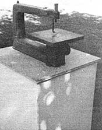

As part of MOTHER's continuing effort to help her readers recycle "junk" into moneysaving useful items, we offer you . . .
Remember that old broken-down washer that you've been intending to take to the dump? Well, be glad you've procrastinated, because the appliance's sturdy frame can provide you with a fine tool stand for your workshop.
And, even if you don't have such an "heirloom" hanging around the house, you can usually pick up a worn-out machine for little or nothing (most folks will be glad to have you haul the old clothes-cleaners away).
Furthermore, the transformation from appliance to tool-operating table isn't difficult to accomplish. First remove the washer's inner mechanism, the top console, and the lid . . . then simply trim a piece of 3/4" plywood to fit the surface . . . and drill and bolt it on to suit your needs. (Before mounting your power tool, though, clean and lubricate the washer's self-leveling legs so they'll work smoothly.)
You'll find that this handy addition to your workshop is neat and lightweight enough to be moved easily, yet sturdy enough to handle even a heavy tool. Moreover, your "new" tool stand will-with the addition of a homemade wooden shelf or two-provide you with extra storage space . . . and that's a commodity that no handyperson can ever have too much of!
EDITOR'S NOTE: For more tips on how you can recycle a wornout washing machine, turn to the article on page 116.
|
 |
|
|